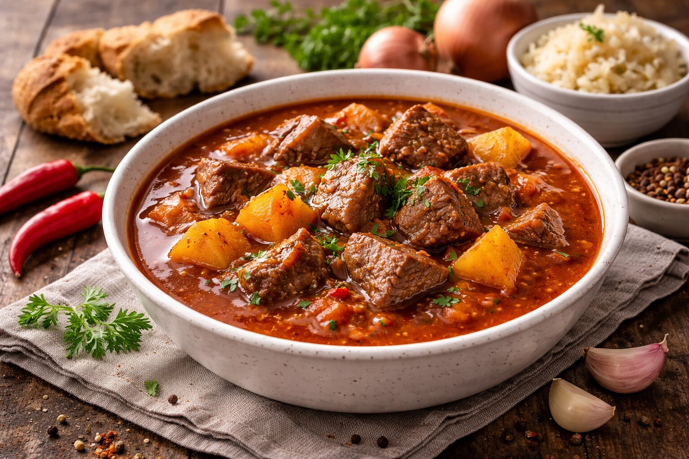

Suroviny
- 800 g hovädzieho mäsa
- 2 veľké cibule
- 3 strúčiky cesnaku
- 2 plné lyžice mletej červenej papriky
- Soľ, čierne korenie
- Rasca
- Olej alebo masť
- 4 L vody
Postup
- Cibuľu nakrájame nadrobno a opečieme na oleji dozlata.
- Pridáme mletú papriku, krátko premiešame.
- Vložíme na kocky nakrájané mäso.
- Pridáme cesnak, korenie, rascu a soľ.
- Zalejeme vodou.
- Dusíme na miernom ohni približne 2 hodiny, kým mäso nezmäkne.